Installation - ioBroker¶
The Backend for ioBroker is maintained by britzelpuf and armilar
https://forum.iobroker.net/topic/50888/sonoff-nspanel/612?_=1654980976439
Step für Step - Anleitung zur Einrichtung eines Sonoff NSPanel mit Lovelace UI unter ioBroker
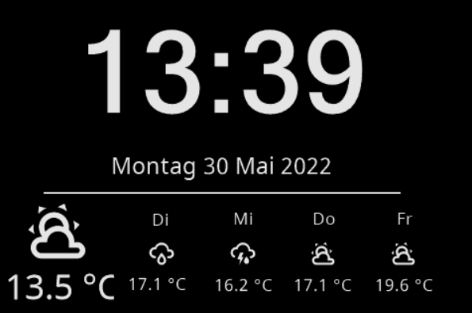 1. Voraussetzungen für den ioBroker
Für den Betrieb benötigst du „keinen“ ioBroker-lovelace-Adapter. Die komplette lovelace-Integration erfolgt über die TFT-Firmware und die nachfolgenden ioBroker-Adapter.
- %(#666)[MQTT-Adapter] 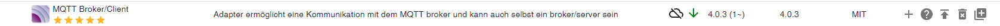 Die Kommunikation zwischen dem NSPanel und ioBroker erfolgt mittels MQTT über Tasmota. Da der Datenpunkt „CustomSend“ erforderlich ist und dieser nicht im Sonoff-Adapter vorhanden ist und auch nicht durch das Skript angelegt werden kann, erfolgt die Kommunikation „nicht“ über den Sonoff-Adapter --> später mehr …
- %(#666)[Javascript-Adapter] Es werden zwei Type-Skripte (TS = das etwas mächtigere Javascript) benötigt. Zum Einen ein Icon-Skript, da alle verwendeten Icons nicht als „echte Grafiken“ im Panel hinterlegt sind, sondern als Schriftzeichen-Symbole. Des Weiteren ein TS-Skript mit dem eigentlichen Laufzeit-Code, welches für jedes eingesetzte NSPanel vorhanden und konfiguriert sein sollte --> später mehr …
- %(#666)[Geräte verwalten“-Adapter] 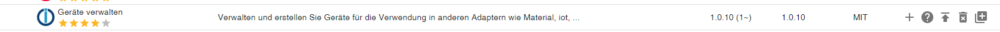 Über diesen Adapter sollten die Aliase später (mit Ausnahme des Media-Alias für Alexa & Co.) erstellt werden --> später mehr …
- %(#666)[Accu-Weather-Adapter] Spielt in erster Linie eine Rolle beim Screensaver-Wetter, da zum Ersten die Icons und die Temperatur-Informationen für den Forecast ausgelesen werden (falls genutzt) und zum Zweiten das aktuelle Wettericon für den Screensaver benötigt wird. Wer keine Wetterstation oder Außentemperatursensor hat, kann auch die Temperatur aus Accu-Weather importieren --> später mehr …
- %(#666)[Alexa2-Adapter] Zur Visualisierung des Media-Player‘s sollte der Alexa2-Adapter installiert sein. Wenn du statt Alexa-Devices andere Hersteller wie z.B. Google-Home-Geräte oder in erster Linie der Spotify-Premium-Adapter im Einsatz hast, so ist es auch möglich mit einem entsprechend, alternativen Media-Adapter den Media-Player zu betreiben --> später mehr …
2. Panel mit Tasmota flashen. Hierzu eignet sich für den "Hardwareteil" die Anleitung von haus-automatisierung.com
(https://www.youtube.com/watch?v=uqPz08ZpFW8). Video bis 11 Minuten und 30 Sekunden befolgen!
Die Beschreibung, wie man das Panel mit Tasmota flashen kann, ohne einen Kurzschluss zu erzeugen, ist schon sehr gut erklärt. Du installierst gleich einen „abweichenden“ Berry-Treiber (autoexec.be) als in der Video-Beschreibung genannt. Wenn du Tasmota und „noch nicht der Berry-Treiber“ installiert hast, bitte mit der Youtube-Video-Anleitung von Matthias ab Zeit=11:30 aufhören. Ich verwende in meinen Panels die Version „tasmota32-DE.bin“. Du kannst aber auch die „tasmota32-nspanel.bin“ verwenden. Zur MQTT-Konfiguration kommen wir im Punkt 4 An dieser Stelle solltest du aber bereits die grundsätzliche Tasmota Konfiguration vornehmen:
a) Unter „Sonstige Einstellungen“ trägst du im Feld Vorlage
{"NAME":"NSPanel","GPIO":[0,0,0,0,3872,0,0,0,0,0,32,0,0,0,0,225,0,480,224,1,0,0,0,33,0,0,0,0,0,0,0,0,0,0,4736,0],"FLAG":0,"BASE":1}
3. Berry-Treiber installieren Im Tasmota findest du unter „Konsolen“ den Button „Verwalte Dateisystem“. Wenn du diesen anklickst, siehst du einen weiteren Button „Datei erstellen und bearbeiten“. Du änderst den Dateinamen „neue-datei.txt“ in „autoexec.be“ und fügst den Inhalt aus dem folgenden Link ein:
https://raw.githubusercontent.com/joBr99/nspanel-lovelace-ui/main/tasmota/autoexec.be
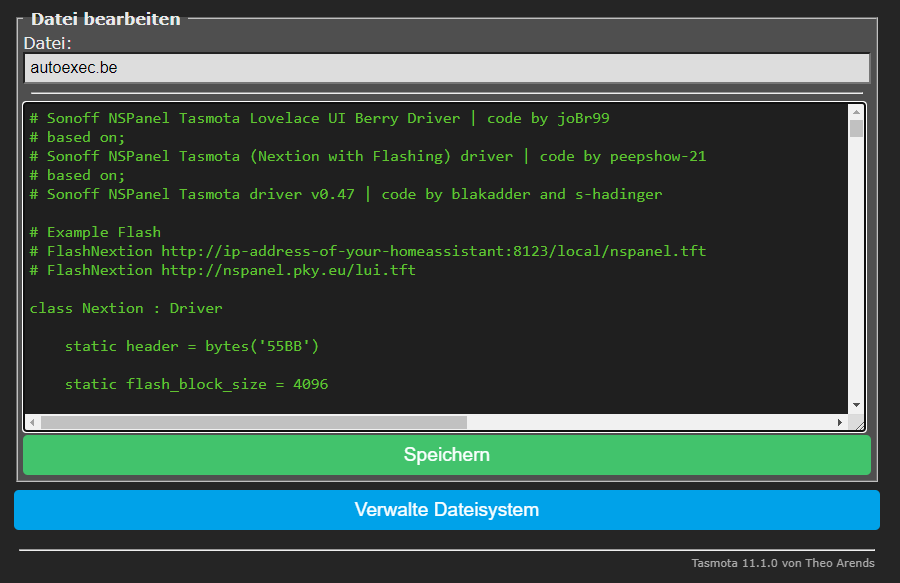 Danach klickst du auf „Speichern“ und dann solltest du Tasmota rebooten.
Wenn das Panel bereits unter einer anderen Variante (z.B. haus-automatisierung.com) installiert war, dann bitte alle Dateien (insbesondere autoexec.be und autoexec.bec) vorher über das Flammensymbol hinter dem Dateinamen löschen. Und von vorne mit dem Punkt 3 beginnen 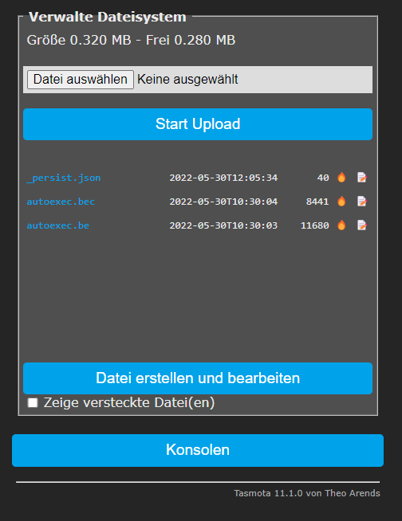
4. MQTT im Tasmota konfigurieren
Im Tasmota unter „Einstellungen/MQTT konfigurieren“: a) Host deines ioBrokers vergeben b) Den Port deiner ioBroker-MQTT-Adapter-Instanz eingeben (für mqtt.0.). Wenn du noch keinen MQTT-Adapter installiert hast, dann verwende bitte nicht unbedingt den Standard-Port 1883. Dieser Port wird auch von anderen Pseudo-MQTT-Adaptern (Sonoff/Shelly/etc.) ebenfalls verwendet und führt im parallelen Betrieb mit anderen MQTT-Devices später unweigerlich zu Komplikationen. Ich verwende für die MQTT-Instanzen gerne einen Port ab 1886 oder 1887 oder 1888 oder höher. Das Problem zeigt sich in der Regel ab dem Zeitpunkt, an dem der „CustomSend“ nicht von deiner mqtt.0.-Instanz abonniert wird. c) Benutzer und Passwort aus der ioBroker-MQTT-Instanz eintragen d) Bei Client und topic trage ich in der Regel „NSPanel_X“ ein. (X = 1, 2, 3 oder WZ für Wohnzimmer, etc.) e) Für den full topic verwende ich in der Regel „SmartHome/%topic%/%prefix%/“. f) Speichern klicken und Einstellungen verlassen
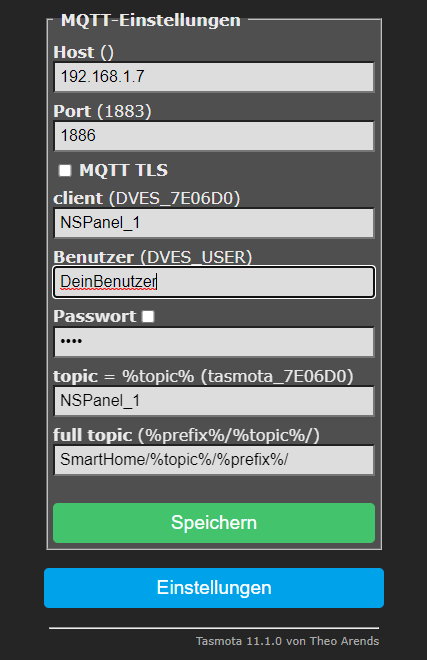
5. TFT-Firmware auf das Panel flashen Tasmota „Konsolen/Konsole“ öffnen und in die Kommandozeile
FlashNextion http://nspanel.pky.eu/lovelace-ui/github/nspanel-v2.9.0.tft
eingeben, mit Enter bestätigen. Das Panel installiert jetzt die TFT-Firmware (Kann beim ersten Mal ein paar Minuten dauern – Fortschritt beobachten – am Ende erfolgt ein Reboot und das Panel wechselt in einen Screen – „Waiting for Content“ 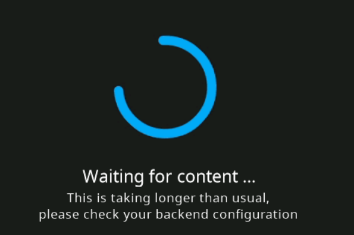
Das Panel wartet jetzt auf den Input von deinem ioBroker-Skript (Installierst du in einem der nächsten Punkte …)
6. MQTT im ioBroker installieren und konfigurieren Wenn du bereits eine Instanz des MQTT-Adapters (z.B. mqtt.0.) nutzt, dann bitte den Port der MQTT-Adapter-Instanz auch im Tasmota-MQTT verwenden. Bitte auch hier den Hinweis aus Punkt 4b beachten und ggf. einen anderen Port für die Kommunikation eintragen. Ansonsten wählst du im ioBroker-Menü unter „Adapter“ den mqtt-Adapter aus und erstellst wie gewohnt eine Instanz des Adapters. Du kannst dir natürlich auch eine zusätzliche Instanz (z.B. mqtt.1. oder mqtt.2. etc.) erstellen.
Meine Einstellungen im Reiter Verbindung sind z.B.: a) IP = Server/Broker b) WebSockets benutzen (angehakt) c) IP Adresse des ioBrokers (wahrscheinlich eth0 oder eth1) auswählen d) Port 1886 (analog Port aus Tasmota/MQTT) e) Benutzer (analog Benutzer aus Tasmota/MQTT) f) Kennwort + Kennwort wiederholen (analog Passwort aus Tasmota/MQTT)
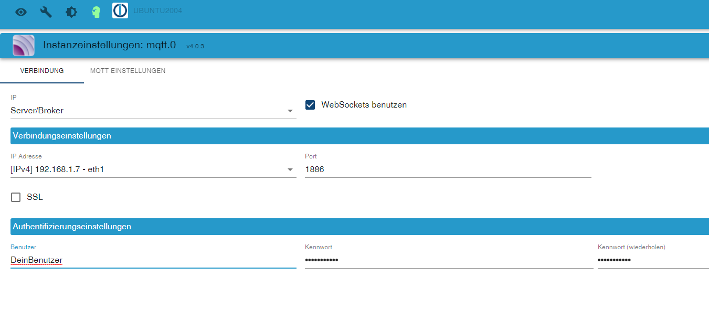
Meine Einstellungen im Reiter MQTT-Einstellungen sind: a) Maske zum Bekanntgeben eigener States: mqtt.0. (Bei zusätzlicher Instanz entsprechend höher (mqtt.1. etc.) b) Eigene States beim Verbinden publizieren (angehakt) c) States bei subscribe publizieren (angehakt) d) Leere Session erzwingen: Client-Einstellungen verwenden
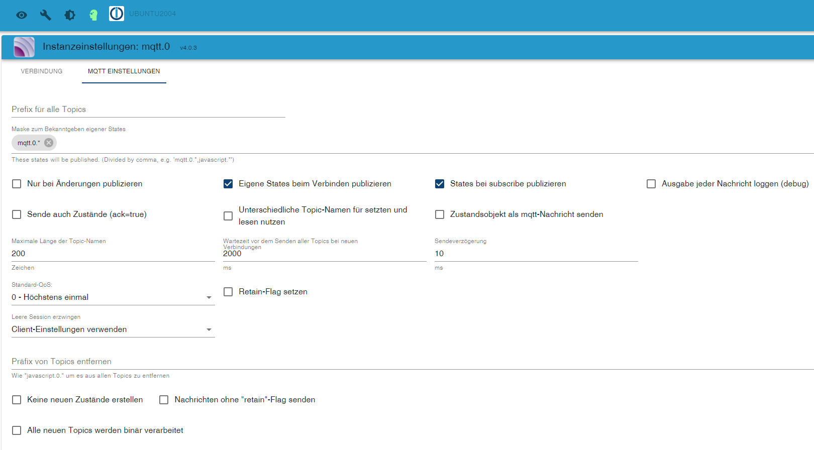
7. CustomSend anlegen Der MQTT Datenpunkt wird benötigt und muss vom MQTT-Adapter angelegt werden. Ein manuelles Anlegen unter „Objekte“ oder „createState“ ist im ioBroker „nicht mehr“ möglich. Um den Datenpunkt zu erzeugen, öffnest du im Tasmota die Konsole und gibst ohne die Anführungszeichen
„CustomSend time~12:00“
8. Icon „TypeScript“ unter „Skripte“ im Verzeichnis „global“ anlegen Wie bereits in der Einleitung erwähnt, werden zwei TypeScripts (TS) benötigt. Das erste ist das Icon-Skript. Das Icon-Skript dient zur Übersetzung von Schriftzeichensymbolen zwischen dem Skript und der TFT-Firmware. Unter dem grünen Vezeichnisbaum „global“ im ioBroker-Menüpunkt Skripte erzeugst du ein Skript mit dem Namen „IconsSelector“ vom Typ: TypeScript (TS). Dort fügst du den Inhalt der Datei:
https://github.com/Armilar/nspanel-lovelace-ui/blob/main/ioBroker/icon_mapping.ts
ein und startest das Skript.
Nur zur Info: Du kannst die einzelnen Icon-Symbolnamen (aktuell 6896 unterschiedliche Icon-Symbole) auf
einsehen und später (kommen wir bei der Alias-Erstellung noch zu) auch jedes Icon in deinem Panel an entsprechender Stelle verwenden. Für die Einbindung sind die „Namen“ der Icons wichtig.
9. TypeScript „NSPanelTs.ts“ anlegen Unter dem regulären Vezeichnisbaum „common“ im ioBroker-Menüpunkt Skripte erzeugst du (gerne auch in weiteren Unterverzeichnissen) ein weiteres Skript (Aktuell in für die TFT-Version 2.9.0) mit dem Inhalt:
https://github.com/jobr99/nspanel-lovelace-ui/blob/main/ioBroker/NsPanelTs.ts
Für jedes einzelne NSPanel das du konfigurieren möchtest, musst du dieses Skript anlegen und speziell für dieses jeweilige NSPanel entsprechende Einstellungen vornehmen. Für den Skriptnamen verwende ich in der Regel eine Kombination aus Panel und Skriptversion, wie z.B.: NSPANEL_1_2.9.0
(Es kommen in regelmäßigen Abständen weitere NSPanel-Features und Bug-Fixes in das GitHub-Skript in denen dann nur noch der untere Teil (--- ab hier keine Konfiguration mehr ---) ausgetauscht werden muss und die NSPanel-Parameter erhalten bleiben)
Die aktuelle Änderung von 2.8.0 auf 2.9.0 ist z.B.:
-
Steuerung von Klimageräten/Klimaanlagen 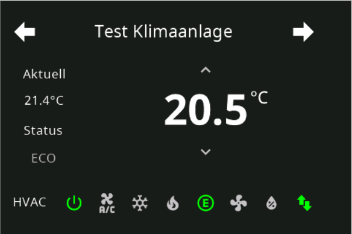
-
QR-Code für z.B. Gäste WLAN 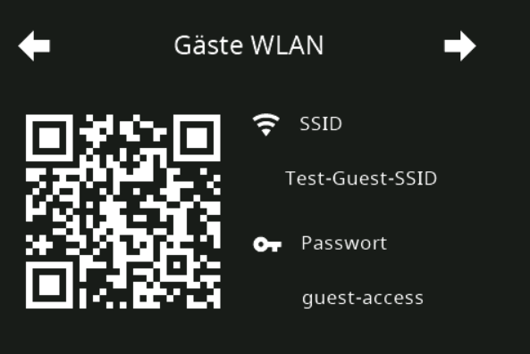
-
Neues Design für Thermostate 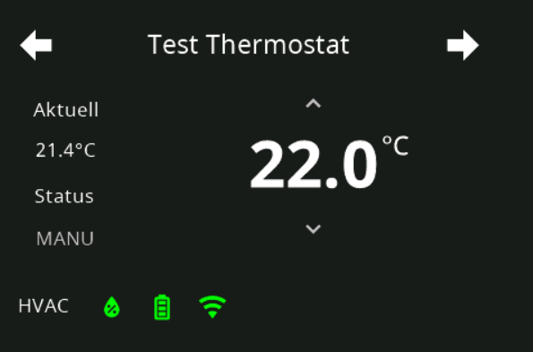
-
etc.
Im oberen Teil des Skripts sind die grundsätzlichen Teile der zu erstellenden Aliase, Konstanten und Variablen (auch Seiten) enthalten. An dieser Stelle ist zunächst wichtig, die Kommunikationsparameter für die MQTT-Kommunikation zu parametrieren (ab ca. Zeile 400) beginnend mit
„export const config: Config = {
Hier musst du die beiden nachfolgenden Kommunikations-Datenpunkte aus dem MQTT-Adapter eintragen:
panelRecvTopic: "mqtt.0.SmartHome.NSPanel_1.tele.RESULT", //bitte anpassen
panelSendTopic: "mqtt.0.SmartHome.NSPanel_1.cmnd.CustomSend", //bitte anpassen
Falls abweichend, dann am besten direkt unter Objekte herauskopieren
Bitte starte das Skript. Alle weiteren Parameter stellen wir später ein. Ab jetzt sollte der Startup-Screen „Waiting for Connection“ in den Sreensaver wechseln und minütlich die Uhrzeit an den Screensaver übertragen und das Datum aktualisiert werden.
10. TypeScript konfigurieren Im Punkt 9 haben wir zunächst die nur Kommunikation zwischen Panel und Skript über MQTT hergestellt. Jetzt kommen wir zum Inhalt des Panels:
Der untere Bereich vom Screensaver:
a) Die 4 kleineren Icons Hier kannst du dich entscheiden, ob du die Wettervorhersage oder eigene Werte visualisieren möchtest. Wenn du dich für den Forecast entscheidest, dann muss die Variable
var weatherForecast
var weatherForecast
export const config: Config = {
b) Diverse Datenpunkte Beim ersten Start des Scripts erzeugt das Skript unter 0_userdata diverse Datenpunkte für Screensaver Dimmode, interne Sensoren, Tasmota-Statuswerte, etc. Der Pfad kann im Skript unter „NSPanel_Path“ angepasst werden.
c) Alexa Wenn du Alexa-Devices mit dem Media-Player nutzen möchtest, dann stelle noch das Standard-Alexa-Device (Seriennummer unter „var alexaDevice“) ein. Ebenso kannst du unter alexaSpeakerList eine Liste mit vorhandenen Alexa-Devices (und/oder Gruppen) anlegen, die von diesem NSPanel-MediaPlayer aus bedient werden sollen. Bleibt diese Liste leer, werden automatisch alle Devices aus dem Alexa2-Adapter importiert.
11. Aliase Anlegen
Jetzt kommt der eigentliche Teil der Seitengestaltung. Es werden keine Datenpunkte benötigt, sondern Aliase.
Ein Alias ist „kein“ Datenpunkt, sondern ein Objekt mit mehreren Datenpunkten.
Das Skript setzt entsprechende Trigger auf die Alias-Datenpunkte .SET, .GET, .ACTUAL usw. Deshalb werden deine Steuerelemente im Panel nicht greifen, wenn du mit einzelnen Datenpunkten aus den verschiedenen Adaptern arbeitest.
Ich habe im Verlauf diverse Aliase erzeugt und auch in den ChangeLogs der jeweiligen Skript-Version sind die möglichen Aliase aufgeführt, daher gehe ich hier nicht (würde die Anleitung auch sprengen) im Detail auf die Aliase ein.
Was brauche ich für einen Alias:
a) Zunächst installierst du dir eine Instanz des Adapters „Geräte verwalten“
b) Dann erstellst du dir einen Alias (Beispiel Wetter-Icon und aktueller Wert der Außentemperatur) Dieser Alias muss nur einmalig angelegt werden und funktioniert somit auch in jedem weiteren Panel.
 und etwas tiefer:
und etwas tiefer:
 c) Wenn du einen Alias für den Media-Player benötigst, dann erstelle die diesen Alias besser über den Adapter „Alias-Manager“,
c) Wenn du einen Alias für den Media-Player benötigst, dann erstelle die diesen Alias besser über den Adapter „Alias-Manager“,
 da der Adapter „Geräte verwalten“ bei diesem Alias nicht ordentlich arbeitet. Jedoch ist der auch so Komplex, das es für Alias-Anfänger schwer ist, einen Alias mit den korrekten Datenpunkten zu füllen.
da der Adapter „Geräte verwalten“ bei diesem Alias nicht ordentlich arbeitet. Jedoch ist der auch so Komplex, das es für Alias-Anfänger schwer ist, einen Alias mit den korrekten Datenpunkten zu füllen.
12. Seitengestaltung
Am Besten benutzt ihr die Beispiele im Skript und legt entsprechende Aliase hierzu an, die auch in diesem ioBroker-Community-Topic innerhalb der letzten Wochen beschrieben wurden.
Und noch ein paar Bilderchen:
cardEntities mit Alias Lampe/Dimmer/Switch 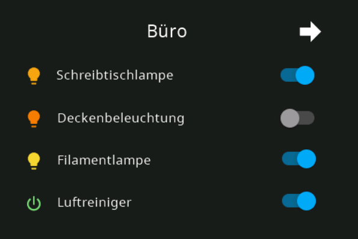
cardEntities mit RGB und HUE Aliasen (Color) 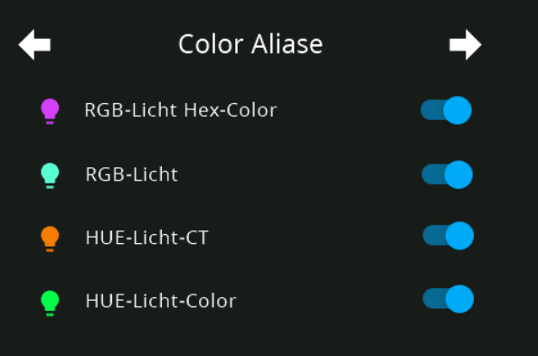
popupLight mit Farbtemperatur und Brightness 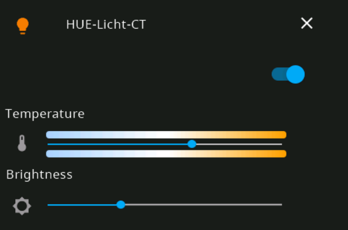
popupLight mit ColorWheel 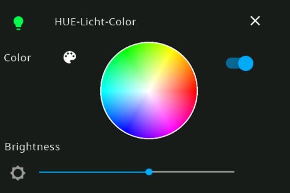
cardGrid mit Radiosendern/Playlists (Alias Taste) 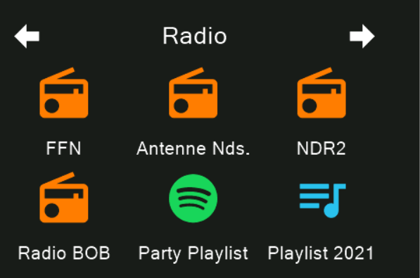
cardEntities mit Aliasen Lautstärke und Info 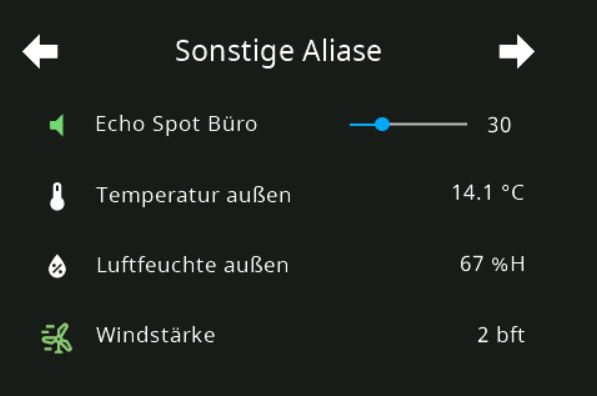
cardEntities mit Fenster, Tür, Jalousie und Verschluss 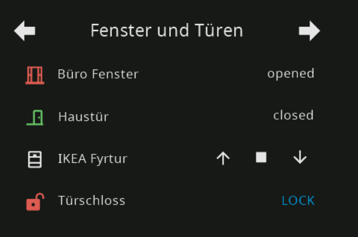
cardEntities mit Abfallkalender 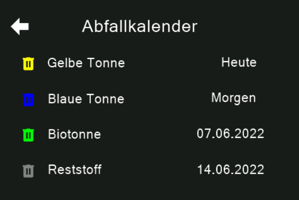
cardMedia 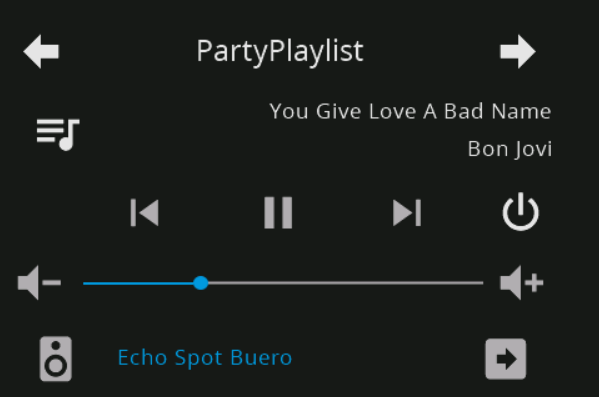
cardAlarm 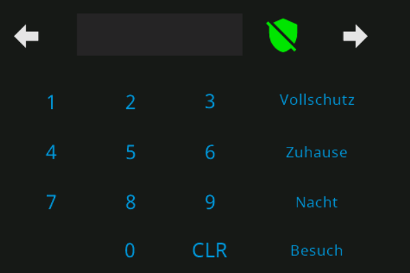
cardGrid 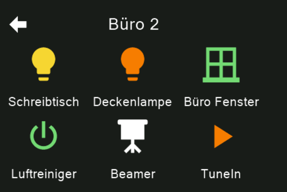
cardEntities 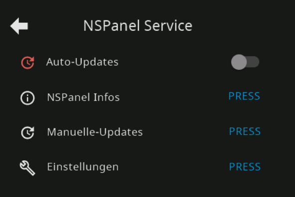
cardEntities als Subpage unter cardEntities (verschachtelt) 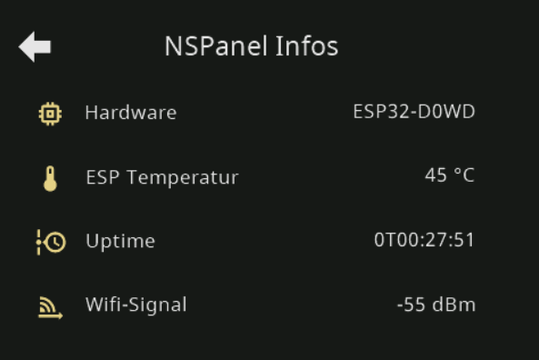
cardNotify 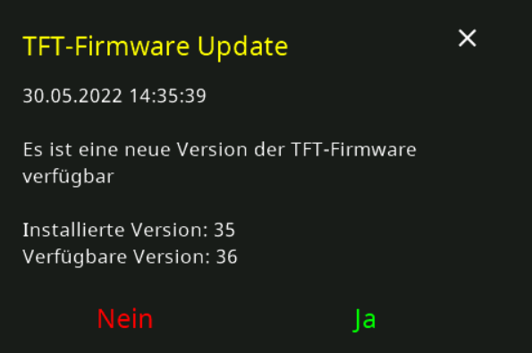